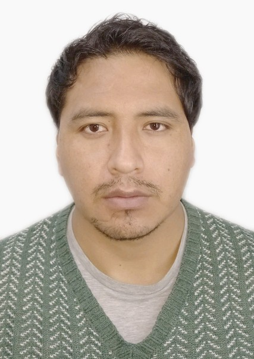
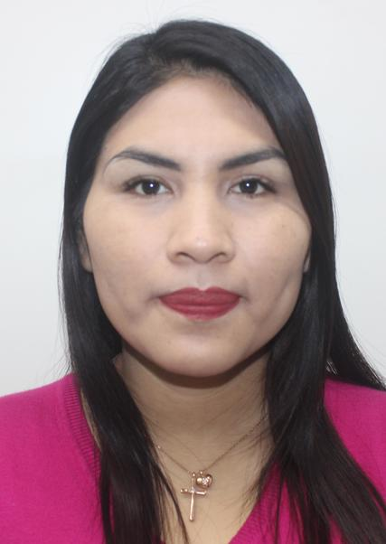
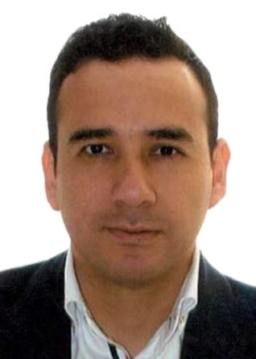

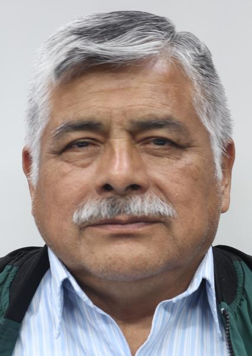
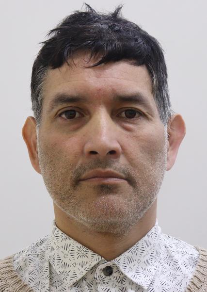
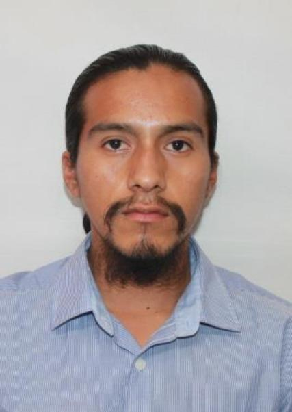
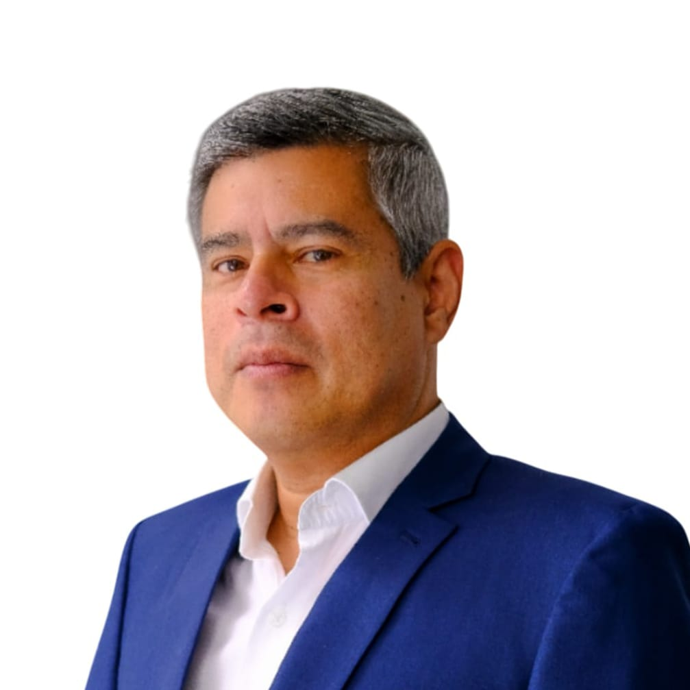
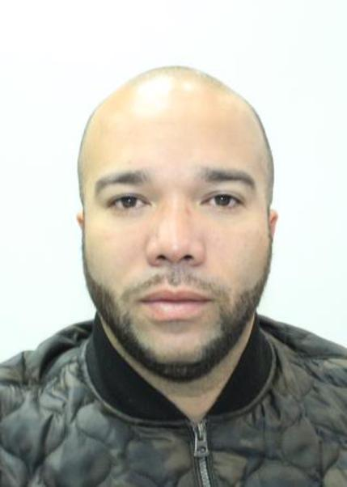
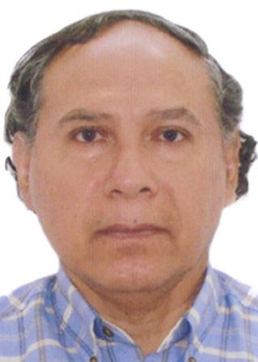
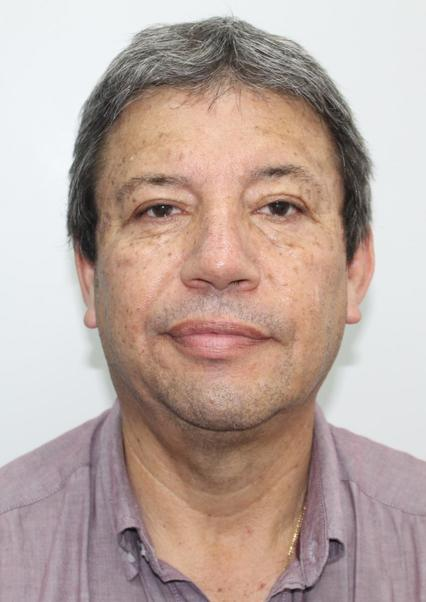
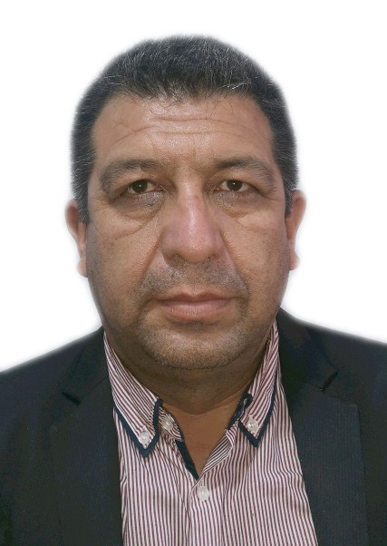
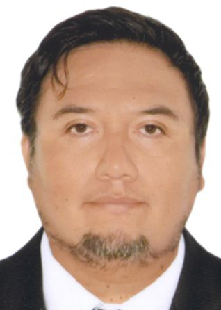

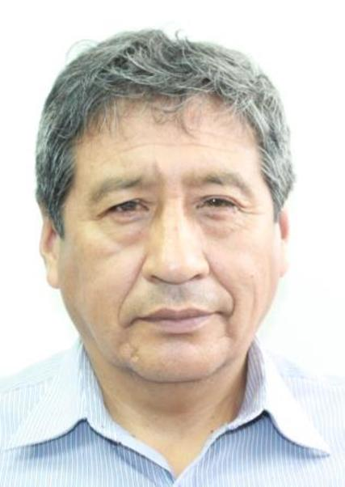
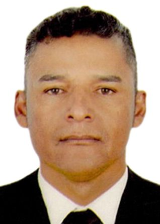
| Nombres | Partido Politico | Foto | CV |
|---|---|---|---|
| JOSE GUILLERMO RAMOS ANAHUE | AHORA NACION |  |
ABOGADO |
| EVELYN GANDHI CAPCHI SOTELO | ALIANZA ELECTORAL VENCEREMOS |  |
PROFESORA |
| JORGE ALEJANDRO GONZALES ORE | ALIANZA PARA EL PROGRESO |  |
ABOGADO |
| YESSICA ROSSELLI AMURUZ DULANTO | AVANZA PAIS | |
ABOGADO |
| NESTOR LUIS RAMIREZ SALVADOR | FE EN EL PERU |  |
POLICIA |
| EDUARDO JOSE NORIEGA CAMPOS | PARTIDO POLITICO INTEGRIDAD DEMOCRATICA |  |
OFIMATICA |
| LUIS ROBERTO INCA CAJACURI | FREPAP |  |
ABOGADO |
| LUIS FERNANDO GALARRETA VELARDE | FUERZA POPULAR |  |
CIENCIAS POLITICAS |
| RAUL RENZO NAVARRO MAURTUA | FUERZA Y LIBERTAD |  |
RELACIONES INDUSTRIALES |
| PAUL PERCY FERNANDEZ BRAVO | JUNTOS POR EL PERU |  |
CONTABILIDAD |
| CARLOS ALBERTO LEON BUSTAMANTE | LIBERTAD POPULAR |  |
PSICOLOGIA |
| ENRIQUE MELGAR MOSCOSO | APRA |  |
HUMANIDAD |
| JAHN CLERK NICANOR TOLEDO PALOMINO | PARTIDO CIVICO OBRAS |  |
ELECTRONICA INDUSTRIAL |
| WALTER BECERRA GARCIA | PTE | |
ABOGADO |
| MARCIO MARINO BENDEZU ECHEVARRIA | EL BUEN GOBIERNO |  |
INGENIERO |
| NESTOR ALFREDO ROCHA VILCHEZ | PARTIDO DEMOCRATA UNIDO PERU |  |
TRABAJADOR |